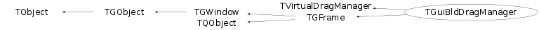

class TGuiBldDragManager: public TVirtualDragManager, public TGFrame
TGuiBldDragManager Drag and drop manager used by the ROOT GUI Builder.
Function Members (Methods)
public:
protected:
| static Int_t | TQObject::CheckConnectArgs(TQObject* sender, TClass* sender_class, const char* signal, TClass* receiver_class, const char* slot) |
| static Bool_t | TQObject::ConnectToClass(TQObject* sender, const char* signal, TClass* receiver_class, void* receiver, const char* slot) |
| static Bool_t | TQObject::ConnectToClass(const char* sender_class, const char* signal, TClass* receiver_class, void* receiver, const char* slot) |
| virtual void | TObject::DoError(int level, const char* location, const char* fmt, va_list va) const |
| virtual void | TGFrame::Draw3dRectangle(UInt_t type, Int_t x, Int_t y, UInt_t w, UInt_t h) |
| static Time_t | TGFrame::GetLastClick() |
| TString | TGFrame::GetOptionString() const |
| const TGResourcePool* | TGFrame::GetResourcePool() const |
| virtual void* | TGFrame::GetSender() |
| virtual const char* | TQObject::GetSenderClassName() const |
| virtual void | TVirtualDragManager::Init() |
| void | TObject::MakeZombie() |
| virtual void | TGFrame::StartGuiBuilding(Bool_t on = kTRUE) |
private:
Data Members
public:
| enum TGFrame::[unnamed] { | kDeleteWindowCalled | |
| }; | ||
| enum TGWindow::EEditMode { | kEditEnable | |
| kEditDisable | ||
| kEditDisableEvents | ||
| kEditDisableGrab | ||
| kEditDisableLayout | ||
| kEditDisableResize | ||
| kEditDisableHeight | ||
| kEditDisableWidth | ||
| kEditDisableBtnEnable | ||
| kEditDisableKeyEnable | ||
| }; | ||
| enum TObject::EStatusBits { | kCanDelete | |
| kMustCleanup | ||
| kObjInCanvas | ||
| kIsReferenced | ||
| kHasUUID | ||
| kCannotPick | ||
| kNoContextMenu | ||
| kInvalidObject | ||
| }; | ||
| enum TObject::[unnamed] { | kIsOnHeap | |
| kNotDeleted | ||
| kZombie | ||
| kBitMask | ||
| kSingleKey | ||
| kOverwrite | ||
| kWriteDelete | ||
| }; |
protected:
private:
| TRootGuiBuilder* | fBuilder | pointer to gui builder |
| Bool_t | fDropStatus | kTRUE if drop was successfull |
| TGuiBldEditor* | fEditor | frame property editor |
| TGPopupMenu* | fFrameMenu | context menu for frames |
| Bool_t | fLassoDrawn | kTRUE if lasso drawn |
| TGPopupMenu* | fLassoMenu | context menu for lasso drawn |
| TList* | fListOfDialogs | list of dialog methods |
| TString | fPasteFileName | paste_clippboard file name |
| TGuiBldDragManagerPimpl* | fPimpl | private data |
| TGFrame* | fSelected | selected frame. In most cases selected is |
| Bool_t | fSelectionIsOn | selection with Shift key pressed |
| Bool_t | fStop | kTRUE if stopped |
| Window_t | fTargetId | an id of window where drop |
| TString | fTmpBuildFile | temporary file name |
| static TGColorDialog* | fgGlobalColorDialog | color dialog |
| static TGFontDialog* | fgGlobalFontDialog | font dialog |
Class Charts
{kind=link}
{kind=link}
{kind=link}
{kind=link}

Function documentation
Bool_t IsSelectedVisible()
Return kTRUE if grabbed/selected frame is not overlapped by other windows.
void HighlightCompositeFrame(Window_t )
Raise composite frame when mouse is moving over it.
That allows to highlight position of "plain" composite frames.
Bool_t HandleTimer(TTimer* )
The main event loop is originated here It repeadeatly queries pointer state and position on the screen. From this info an Event_t structure is built.
Bool_t HandleTimerEvent(Event_t* ev, TTimer* t)
Handle timer events or events coming from the recorder.
Bool_t RecognizeGesture(Event_t* , TGFrame* frame = 0)
Recognize what was done when mouse button pressed
void HandleButon3Pressed(Event_t* , TGFrame* frame = 0)
Handle 3d mouse pressed (popup context menu)
TList * GetFramesInside(Int_t x0, Int_t y0, Int_t x, Int_t y)
Return the list of frames inside of some area
void HandleReturn(Bool_t on = kFALSE)
Handling of return/enter key pressing If on is kFALSE: If Return or Enter key was pressed - Grab Act If lasso is drawn - new composite frame is created and all frames inside lasso adopted as childrens. If lasso is not drawn and selected frame is composite one, - new TGCanvas widget is created and selcted frmae became container for this canvas. If on is kTRUE: If Return or Enter key was pressed with Control Key - Drop Act, The opposite action to the Grab Act. If selected/grabbed frame is not a TGCanvas widget - all frames inside the grabbed/selected frame are "dropped" into the underlying frame and the grabbed frame is deleted. If selected/grabbed frame is a TGCanvas widget - container frame "dropped" to editable frame
void HandleDelete(Bool_t crop = kFALSE)
Handle delete or crop action crop is kFALSE - delete action - if lasso is drawn -> all frames inside lasso area are deleted - if frame is grabbed/selected -> the frame is deleted crop is kTRUE - crop action - if lasso is drawn -> all frames outside of lasso area are deleted - if frame is grabbed/selected -> all frames except the grabbed frame are deleted In both cases the main frame is shrinked to the size of crop area.
void HandleCopy(Bool_t brk_layout = kTRUE)
Bool_t CheckTargetAtPoint(Int_t x, Int_t y)
Helper. Look for the drop target under grabbed/selected frame while moving.
Bool_t IsMoveWaiting() const
Waits for either the mouse move from the given initial ButtonPress location or for the mouse button to be released. If mouse moves away from the initial ButtonPress location before the mouse button is released "IsMoveWaiting" returns kTRUE. If the mouse button released before the mose moved from the initial ButtonPress location, "IsMoveWaiting" returns kFALSE.
Bool_t CanChangeLayoutOrder(TGWindow* w) const
kTRUE - if it's possible to change layout order in the parent's layout of window w
void CreatePropertyEditor()
Create widget property editor (it could be located outside of guibuilder)
void HandleUpdateSelected(TGFrame* )
When selected frame was changed by guibuilder editor -> update its appearence
void AddDialogMethods(TGPopupMenu* menu, TObject* object)
Add DIALOG entries to the selected frame popup menu
void AddClassMenuMethods(TGPopupMenu* menu, TObject* object)
Add entries with class //*MENU* methods
TGColorDialog * GetGlobalColorDialog(Bool_t create = kTRUE)
Return pointer to global color dialog. If dialog is not yet created and input parameter is kTRUE - the dialog will be created.
void MapGlobalDialog(TGMainFrame* dialog, TGFrame* fr)
Map dialog and place it relative to selected frame.
void ChangeBackgroundColor(TGCompositeFrame* )
Change background color via context menu for this frame and all subframes. This method is activated via context menu during guibuilding.
void ChangeTextColor(TGGroupFrame* )
Change text color via color selection dialog. This method is activated via context menu during guibuilding.
void ChangeTextFont(TGGroupFrame* )
Change text font via font selection dialog. This method is activated via context menu during guibuilding.
void ChangeProperties(TGTextButton* )
Edit properties via font selection dialog. This method is activated via context menu during guibuilding.
void ChangeTextColor(TGTextButton* )
Change text color via color selection dialog. This method is activated via context menu during guibuilding.
void ChangePicture(TGPictureButton* )
Invoke file dialog to assign a new picture. This method is activated via context menu during guibuilding.
void ChangeBackgroundColor(TGComboBox* )
Change background color for list box entries. This method is invoked via context menu during guibuilding.
void ChangeProperties(TGLabel* )
Edit properties via font selection dialog. This method is activated via context menu during guibuilding.
void ChangeTextColor(TGLabel* )
Change text color via color selection dialog. This method is activated via context menu during guibuilding.
void ChangeBackgroundColor(TGListBox* )
Set background color for list box entries. This method is invoked via context menu during guibuilding.
void ChangeBarColor(TGProgressBar* )
Set progress bar color via TGColorDialog. This method is activated via context menu during guibuilding.
void ChangeTextColor(TGTextEntry* )
Set text color. This method is invoked via context menu during guibuilding.
void ChangeTextFont(TGTextEntry* )
Change text font via font selection dialog. This method is activated via context menu during guibuilding.
void ChangeImage(TGIcon* )
Invoke file dialog to assign a new image. This method is activated via context menu during guibuilding.
Bool_t IsGrabDisabled(TGWindow* f) const
{ return (f && (f->GetEditDisabled() & kEditDisableGrab)); }Bool_t IsEventsDisabled(TGWindow* f) const
{ return (f && (f->GetEditDisabled() & kEditDisableEvents)); }Bool_t IsFixedLayout(TGWindow* f) const
{ return (f && (f->GetEditDisabled() & kEditDisableLayout)); }Bool_t IsFixedSize(TGWindow* f) const
{ return (f && (f->GetEditDisabled() & kEditDisableResize)); }